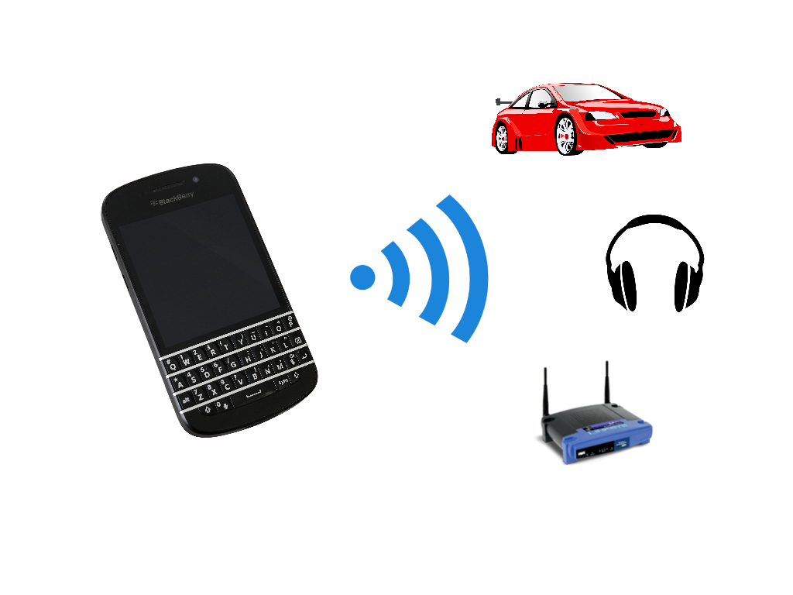
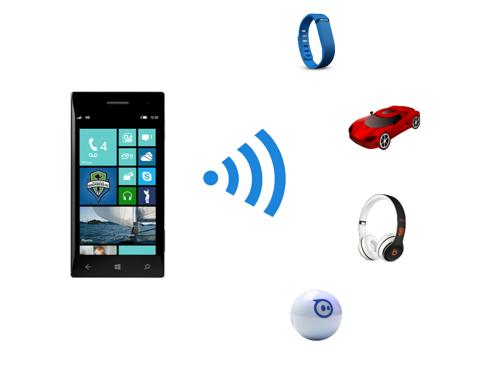
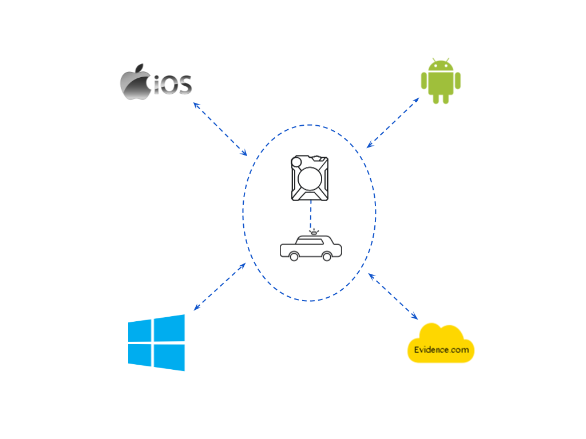
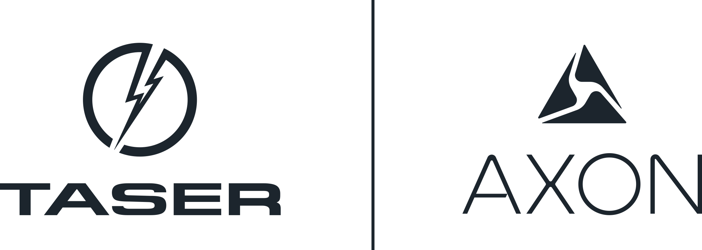

My name is Nathan Grubb and I'm a professional software engineer. Currently, I work at Taser International in their
Axon division writing software for their next generation of police cameras. Outside of work I'm always playing with the latest
technologies though not always building products. Although my primary passion is definitely with software
and technology, I have other passions outside of work including flying, motorsports, board sports, cooking and building
to name a few.
- C/C++
- Java
- Python
- JavaScript
- C#
- Wi-Fi
- Classic Bluetooth
- Bluetooth Low Energy
- Windows
- Linux
- Protocol Buffers
- Electron
- FFmpeg
- Thrift